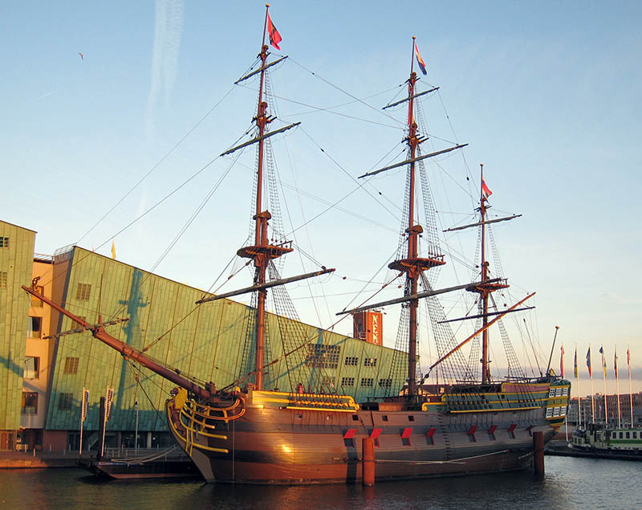

The Amsterdam Shipwreck (1749)
Found in 1969, this is the remains of a Dutch East Indiaman ship that was on her maiden voyage to Java, Indonesia.
The ship was carrying 203 crew, 127 soldiers, 5 passengers, and various domestic goods including 28 brass bound chests of silver bullion.
After two weeks in stormy seas and 50 deaths due to sickness, Captain Willem Klump (33) decided to take shelter at Pevensey Bay on 23rd January 1749. The ship ran aground and its rudder broke leaving them to drift east, beaching on the 26th at Bulverhythe after the crew mutinied.
After the Amsterdam's guns were fired in distress, hundreds of locals braved the stormy weather to help the crew into shelter before they returned to the Netherlands.[3]
Much of the cargo went down with the ship, although some of the finds found during excavations in the 1980's are on show at the Shipwreck Museum in Hastings. The anchor can be found as an art piece at St. Katherine Docks in London.[4]
The wreck is located opposite the Bulverhythe railway footbridge and best seen during the spring low-tides.

Replica of the VOC ship Amsterdam. NEMO science centre, Amsterdam, Holland. © S Sepp